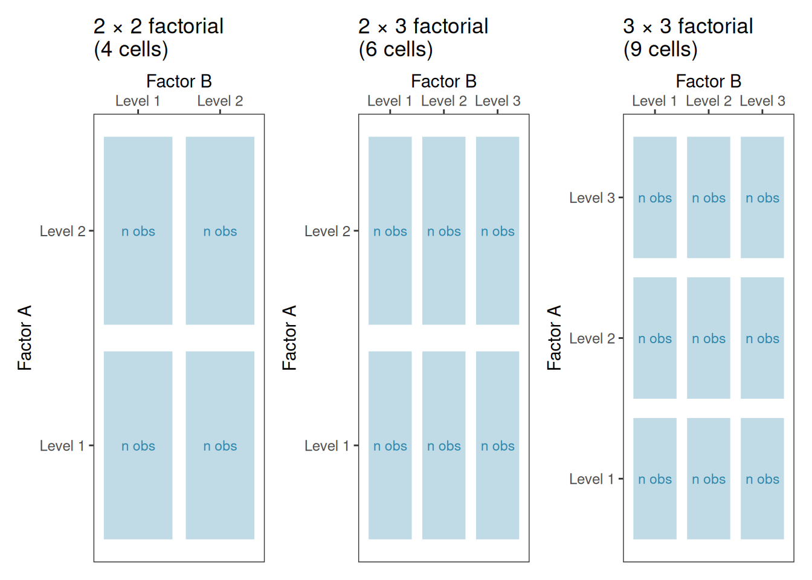
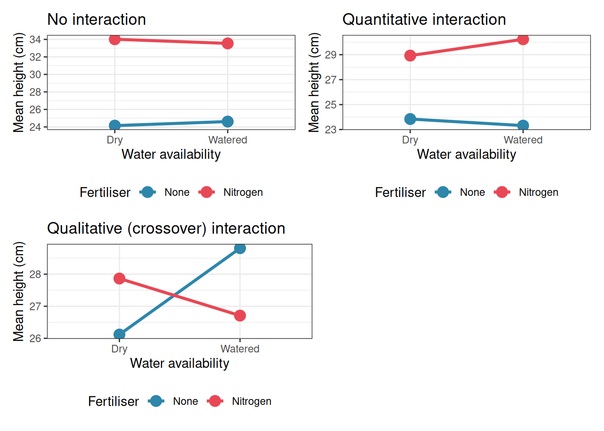
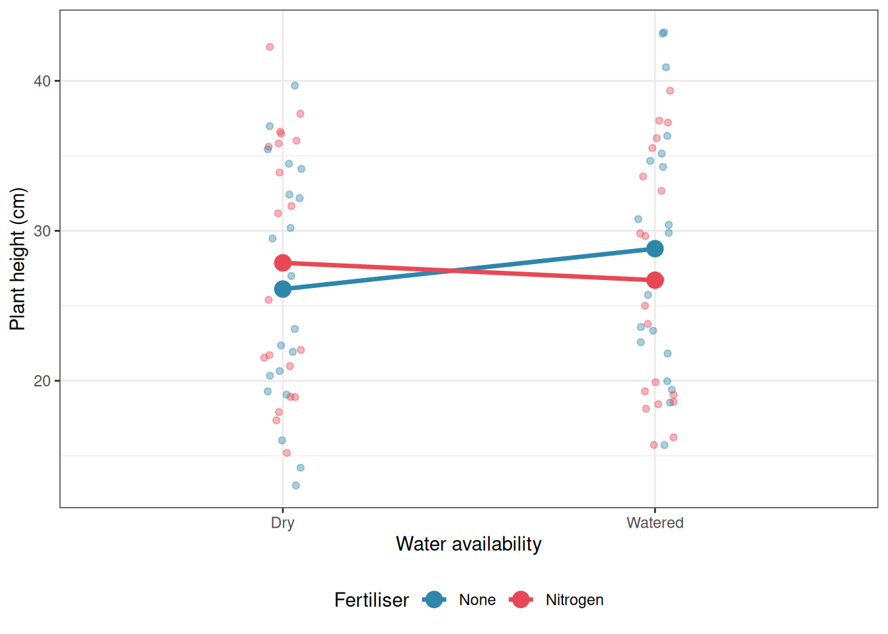
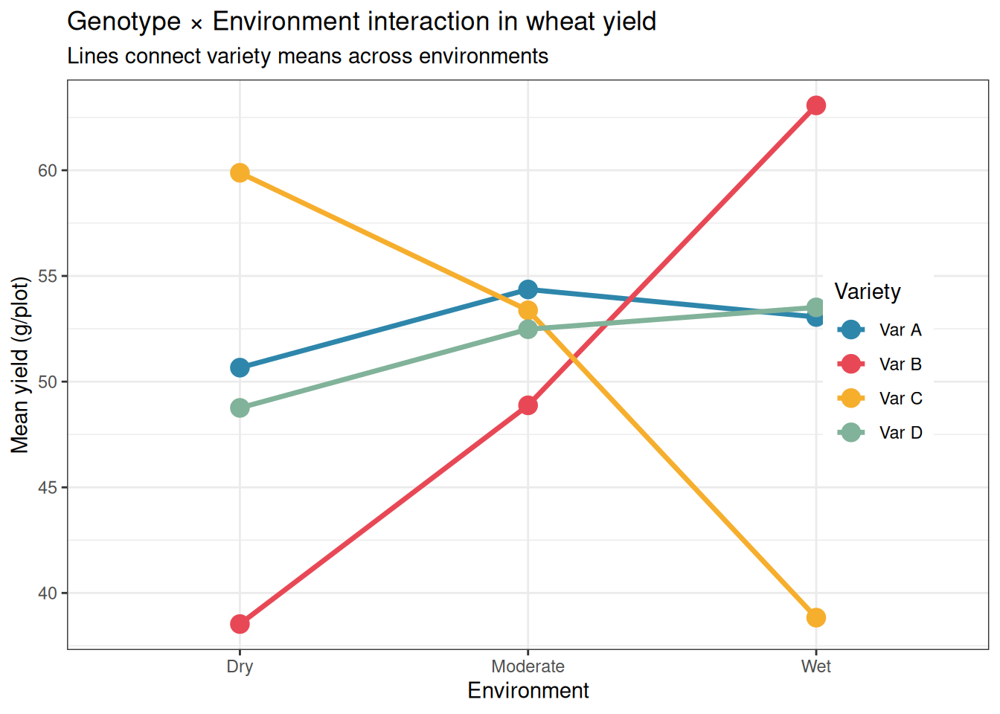
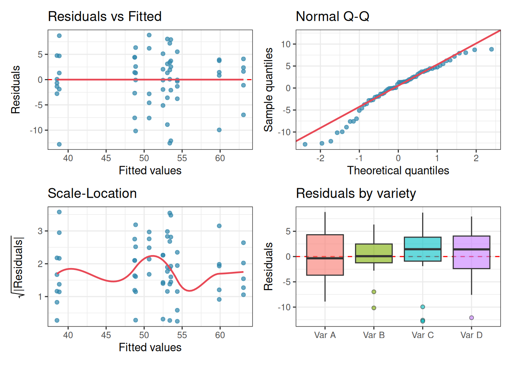

5 Two-Way ANOVA and Factorial Designs
One-way ANOVA asks whether a single factor, a fertiliser, a drug, or a diet, affects the response. But most biological systems are not that simple. Plant growth depends on both the fertiliser applied and the soil type it is applied to. Drug efficacy depends on both the dose and the genetic background of the patient. Yield depends on both the crop variety and the environment in which it is grown.
Two-way ANOVA extends the one-way framework to handle two factors simultaneously. This is not merely a convenience, it is a more honest representation of how biological systems work. And it introduces one of the most important concepts in all of applied statistics: the interaction, the situation where the effect of one factor depends on the level of another.
5.1 Factorial Designs: The Logic and the Advantage
5.1.1 The One-Factor-at-a-Time Trap
Before introducing the statistics, it is worth asking a more fundamental question: why run a factorial experiment at all? The intuitive alternative, varying one factor at a time while holding everything else constant, seems safer and easier to interpret. In practice, it is neither.
Suppose you want to understand how both fertiliser type and watering regime affect wheat yield. The one-factor-at-a-time approach would run two separate experiments: first vary the fertiliser while keeping watering constant, then vary watering while keeping fertiliser constant. This requires two experiments, two sets of plants, and twice the resources. More importantly, it answers two questions in isolation: what does fertiliser do when watering is fixed at one level? rather than the richer question of how fertiliser and watering work together across the full range of conditions you care about.
Worst of all, the one-factor-at-a-time approach cannot detect interactions. If nitrogen fertiliser triples yield under well-watered conditions but has no effect under drought, two separate experiments, one fixing watering at “well-watered” and one fixing fertiliser at “nitrogen”, will never reveal this. You would need to have been lucky enough to choose the right fixed level in each experiment, and even then you would have no statistical framework for testing whether the discrepancy is real or due to chance.
Fisher recognised this limitation at Rothamsted in the 1920s and proposed the factorial design as the solution: vary all factors simultaneously, in all combinations, within a single experiment.
5.1.2 What Is a Factorial Design?
A factorial design is an experiment in which every level of every factor is combined with every level of every other factor. If factor \(A\) has \(a\) levels and factor \(B\) has \(b\) levels, a complete factorial design has \(a \times b\) treatment combinations, called cells. With replication, \(n\) observations per cell, the total number of observations is \(a \times b \times n\).
For our fertiliser and watering experiment with two fertiliser levels (none, nitrogen) and two watering levels (dry, watered), a \(2 \times 2\) factorial design produces four cells:
| Dry | Watered | |
|---|---|---|
| No fertiliser | Cell 1 | Cell 2 |
| Nitrogen | Cell 3 | Cell 4 |
Each cell receives its own random set of experimental units, here, pots of wheat plants. With \(n = 5\) plants per cell, the total experiment requires \(2 \times 2 \times 5 = 20\) plants.
5.1.3 The Efficiency Advantage
A factorial design extracts more information from the same data than a one-factor-at-a-time experiment of the same size. Consider a \(2 \times 2\) factorial with \(n\) observations per cell, giving \(4n\) observations in total. The main effect of fertiliser is estimated by comparing the \(2n\) observations in the nitrogen rows to the \(2n\) observations in the no-fertiliser rows with all \(4n\) observations contribute to this estimate. The main effect of watering is estimated similarly, using all \(4n\) observations. A one-factor-at-a-time experiment of the same total size would dedicate only \(2n\) observations to each factor.
Fisher called this the hidden replication of factorial designs: every observation simultaneously contributes to the estimation of every main effect and every interaction. No observation is wasted.
5.1.4 Common Factorial Design Structures
Factorial designs come in several standard forms, differing in the number of factors and levels involved.
\(2 \times 2\) factorial (two factors, two levels each). The simplest factorial design. Produces four cells and allows estimation of two main effects and one interaction. Common in clinical trials (drug A yes/no \(\times\) drug B yes/no) and agricultural experiments (fertiliser yes/no \(\times\) irrigation yes/no).
\(2^k\) factorial (k factors, two levels each). A natural extension of the \(2 \times 2\) design to \(k\) factors. With \(k = 3\) factors there are \(2^3 = 8\) cells; with \(k = 4\) there are \(2^4 = 16\) cells. These designs are widely used in industrial and agricultural screening experiments where many factors must be evaluated efficiently.
\(a \times b\) factorial (two factors, multiple levels). The general case, as in our fertiliser-by-environment example (see below) with four varieties and three environments (\(4 \times 3 = 12\) cells). This is the most common structure in biological research.
Higher-order factorials. Three or more factors can be combined in a single experiment (\(a \times b \times c\), and so on). These designs become large quickly: a \(3 \times 3 \times 3\) factorial already requires 27 cells and their higher-order interactions are often difficult to interpret biologically. In practice, three-way and higher interactions are rarely interpretable and the experiments that produce them often require fractional factorial designs, which are beyond the scope of this book.
5.1.5 Balanced vs Unbalanced Factorial Designs
A factorial design is balanced when every cell contains exactly the same number of observations. Balanced designs have important advantages: the main effects and interaction are orthogonal (statistically independent), the sums of squares partition cleanly and unambiguously, and the analysis is straightforward. Whenever possible, factorial experiments should be designed to be balanced.
In practice, balance is often lost. Animals die, plants fail to germinate, patients drop out of trials, soil cores are contaminated. The result is an unbalanced design (unequal cell sizes) which introduces the sums of squares complications discussed in sec-unbalanced. The key practical message is that unbalanced designs are manageable, but they require more care in analysis and should be anticipated at the design stage by slightly over-recruiting to each cell.
5.1.6 Fixed, Random, and Mixed Factorial Designs
Just as in one-way ANOVA (sec-one-way), the factors in a factorial design can be fixed or random, and this distinction determines both the model and the correct F test.
A fixed factor is one whose levels are specifically chosen by the experimenter and whose conclusions apply only to those levels. Fertiliser type (none, nitrogen, phosphorus) is a fixed factor: the conclusions are about those three specific treatments.
A random factor is one whose levels are a random sample from a larger population of levels, and whose conclusions are intended to generalise to that population. Field sites selected at random from a region, batches of reagents drawn from a production run, or patients recruited from a hospital are random factors.
A mixed factorial design contains both fixed and random factors. This is extremely common in biology: a treatment applied across randomly selected sites, a drug tested across randomly recruited patients, or a crop variety evaluated across randomly selected growing seasons. The statistical model for a mixed factorial design is a mixed-effects model, and the correct F tests for the fixed effects differ from those in an all-fixed design. This will be developed fully in Part III. For now, the two-way ANOVA presented in this chapter assumes both factors are fixed.
5.1.7 Randomisation in Factorial Designs
As Fisher emphasised at Rothamsted, the validity of a factorial experiment depends on proper randomisation. Each experimental unit must be randomly assigned to one of the \(a \times b\) treatment combinations. This randomisation ensures that the treatment effects are not confounded with any systematic difference between units such as position in a greenhouse, order of processing in a laboratory, or any other nuisance variable that might vary across the experiment.
In practice, randomisation in factorial experiments is sometimes constrained. If one factor is difficult or expensive to change (the temperature of a growth chamber, the irrigation regime of a field) it may be more practical to change it less frequently than the other factor. This leads to split-plot designs, in which the randomisation is done in two stages and the two factors have different levels of replication. Split-plot designs require a modified analysis and are covered in Chapter 7.
The diagram below summarises the common factorial design structures discussed in this section:
5.2 Main Effects and Interactions
5.2.1 The Model
With two factors \(A\) (with \(a\) levels) and \(B\) (with \(b\) levels), the two-way ANOVA model is:
\[y_{ijk} = \mu + \alpha_i + \beta_j + (\alpha\beta)_{ij} + \varepsilon_{ijk}\]
where:
- \(\mu\) is the grand mean.
- \(\alpha_i\) is the main effect of factor \(A\) at level \(i\): the average effect of being in level \(i\) of \(A\), averaged across all levels of \(B\).
- \(\beta_j\) is the main effect of factor \(B\) at level \(j\): the average effect of being in level \(j\) of \(B\), averaged across all levels of \(A\).
- \((\alpha\beta)_{ij}\) is the interaction effect: the extent to which the effect of factor \(A\) at level \(i\) differs depending on which level of \(B\) is present, and vice versa.
- \(\varepsilon_{ijk}\) is the residual for the \(k\)th observation in cell \((i, j)\), assumed \(\varepsilon_{ijk} \sim \mathcal{N}(0, \sigma^2)\).
The constraints are \(\sum_i \alpha_i = 0\), \(\sum_j \beta_j = 0\), \(\sum_i (\alpha\beta)_{ij} = 0\) for all \(j\), and \(\sum_j (\alpha\beta)_{ij} = 0\) for all \(i\).
5.2.2 Main Effects
A main effect is the average effect of one factor, collapsing across all levels of the other. In a fertiliser-by-watering experiment, the main effect of fertiliser is the average difference in plant height between fertilised and unfertilised plants, averaging over both watered and unwatered conditions.
Main effects are straightforward to interpret, but only when the interaction is absent or negligible. When a substantial interaction is present, main effects can be misleading, as we will see shortly.
5.2.3 Interactions
An interaction occurs when the effect of one factor is not the same at every level of the other factor. This is not a statistical artefact or a complication to be wished away, it is a genuine biological phenomenon, and recognising it is often the most scientifically interesting finding in an experiment.
Three situations are worth distinguishing:
No interaction (additivity). The effect of factor \(A\) is the same regardless of which level of \(B\) is present. The two factors act independently and their effects simply add together. The lines in an interaction plot are parallel.
Quantitative interaction. The effect of factor \(A\) differs in magnitude across levels of \(B\), but always in the same direction. For example, nitrogen fertiliser always increases plant height, but by more in well-watered plots than in dry plots. The lines in an interaction plot are not parallel but do not cross.
Qualitative interaction (crossover interaction). The effect of factor \(A\) reverses direction depending on the level of \(B\). For example, a drug increases survival in young patients but decreases it in elderly patients. The lines in an interaction plot cross. This is the most consequential type of interaction: main effects are not just misleading here, they are actively wrong.
5.2.4 The Three \(F\) Tests
Two-way ANOVA produces three \(F\) tests, one for each term in the model:
\[F_A = \frac{MS_A}{MS_{\text{within}}} \qquad F_B = \frac{MS_B}{MS_{\text{within}}} \qquad F_{AB} = \frac{MS_{AB}}{MS_{\text{within}}}\]
The interaction test \(F_{AB}\) should always be examined first. If it is significant, the main effect tests must be interpreted with great caution: they describe averages that may not represent any real condition in the experiment.
5.3 Interpreting Interaction Plots: A Critical Skill
5.3.1 Why Interaction Plots Matter
An interaction plot displays the mean response for each combination of factor levels, with the levels of one factor on the x-axis and separate lines for each level of the other factor. It is the single most important diagnostic tool in factorial ANOVA, and the ability to read one correctly is a skill worth developing carefully.
The rule of thumb is simple: parallel lines mean no interaction; non-parallel lines suggest an interaction. But as the simulations below show, the details matter considerably.
Code
library(ggplot2)
library(patchwork)
set.seed(42)
n <- 20 # per cell
# Factor levels
fertiliser <- c("None", "Nitrogen")
water <- c("Dry", "Watered")
make_df <- function(cell_means, sd = 4) {
data.frame(
height = c(
rnorm(n, cell_means[1], sd), # None x Dry
rnorm(n, cell_means[2], sd), # None x Watered
rnorm(n, cell_means[3], sd), # Nitrogen x Dry
rnorm(n, cell_means[4], sd) # Nitrogen x Watered
),
fertiliser = factor(rep(rep(fertiliser, each = n), 1), levels = fertiliser),
water = factor(rep(rep(water, n), 2), levels = water)
)
}
# Scenario 1: No interaction (parallel lines)
df1 <- make_df(c(20, 30, 28, 38))
# Scenario 2: Quantitative interaction (diverging lines, same direction)
df2 <- make_df(c(20, 22, 28, 38))
# Scenario 3: Qualitative interaction (crossing lines)
df3 <- make_df(c(20, 35, 35, 20))
interaction_plot <- function(df, title) {
summ <- aggregate(height ~ fertiliser + water, data = df, FUN = mean)
ggplot(summ, aes(x = water, y = height, colour = fertiliser, group = fertiliser)) +
geom_line(linewidth = 1.2) +
geom_point(size = 4) +
scale_colour_manual(values = c("#2E86AB", "#E84855")) +
labs(title = title, x = "Water availability", y = "Mean height (cm)", colour = "Fertiliser") +
theme_bw() +
theme(legend.position = "bottom")
}
p1 <- interaction_plot(df1, "No interaction")
p2 <- interaction_plot(df2, "Quantitative interaction")
p3 <- interaction_plot(df3, "Qualitative (crossover) interaction")
(p1 + p2) / (p3 + plot_spacer())
5.3.2 Reading the Plots
No interaction (top left): The nitrogen line sits consistently above the no-fertiliser line by the same amount in both dry and watered conditions. The lines are parallel. The main effect of fertiliser (nitrogen increases height) and the main effect of water (watering increases height) can each be stated cleanly and without qualification.
Quantitative interaction (top right): Nitrogen still increases height in both conditions, but the benefit is much larger under watered conditions than under dry conditions. The lines diverge. The main effect of fertiliser is still real and directionally correct, but the simple statement “nitrogen increases height by X cm” misses an important nuance: the benefit depends substantially on water availability.
Qualitative interaction (bottom left): Nitrogen increases height under dry conditions but decreases it under watered conditions. The lines cross. The main effect of fertiliser, averaging across both water conditions, will be near zero and will be essentially uninterpretable. Reporting it would be actively misleading. The scientifically correct statement is: “the effect of nitrogen depends entirely on water availability, and reverses direction between conditions.”
5.3.3 A Practical Warning
Interaction plots display means, not raw data. A pattern that looks dramatic in the means may not be statistically significant if the within-cell variation is large. Always fit the model and examine the interaction \(F\) test before interpreting the plot. Conversely, a significant interaction F test with a flat-looking interaction plot in small samples deserves scrutiny: the significance may be driven by a single influential cell.
The best practice is to overlay the raw data on the interaction plot:
ggplot(df3, aes(x = water, y = height, colour = fertiliser, group = fertiliser)) +
geom_jitter(width = 0.05, alpha = 0.4, size = 1.5) +
stat_summary(fun = mean, geom = "line", linewidth = 1.2) +
stat_summary(fun = mean, geom = "point", size = 4) +
scale_colour_manual(values = c("#2E86AB", "#E84855")) +
labs(x = "Water availability", y = "Plant height (cm)", colour = "Fertiliser") +
theme_bw() +
theme(legend.position = "bottom")
5.4 Unbalanced Designs and Type I, II, and III Sums of Squares
5.4.1 What Is an Unbalanced Design?
A factorial design is balanced when every cell, every combination of factor levels, contains the same number of observations. It is unbalanced when cell sizes differ. Unbalanced designs arise routinely in biology: animals die during an experiment, plant pots are accidentally knocked over, patients drop out of a clinical trial. They are not a methodological failure, they are a practical reality.
The problem with unbalanced designs is that the two factors are no longer orthogonal. The levels of factor \(A\) are not equally represented across the levels of factor \(B\), which means that some of the variation in the response is simultaneously attributable to both factors. How this shared variation is partitioned between the factors determines the sums of squares, and there are three different conventions for doing so, giving three different answers.
5.4.2 Type I Sums of Squares (Sequential)
Type I SS tests each factor sequentially, in the order it appears in the model formula. Factor \(A\) is tested first, ignoring \(B\). Then \(B\) is tested given \(A\) is already in the model. Then the interaction is tested given both main effects.
The critical problem: the results depend on the order in which you specify the factors. aov(y ~ A + B + A:B) and aov(y ~ B + A + A:B) will give different F tests for both \(A\) and \(B\) in an unbalanced design. This is the default in R’s aov() function, and it is rarely what you want for a two-way ANOVA with unequal cell sizes.
Type I SS is appropriate only when the sequential ordering has a clear scientific justification, for example, in a hierarchical model where one factor genuinely precedes the other conceptually.
5.4.3 Type II Sums of Squares
Type II SS tests each main effect after adjusting for the other main effect, but not for the interaction. Factor \(A\) is tested given \(B\) is in the model; factor \(B\) is tested given \(A\) is in the model; but neither is adjusted for the \(A \times B\) interaction.
Type II SS is appropriate when you have good reason to believe the interaction is absent or negligible. It is more powerful than Type III in that situation because it does not spend degrees of freedom adjusting for an interaction that does not exist.
5.4.4 Type III Sums of Squares
Type III SS tests each term after adjusting for all other terms in the model simultaneously. Factor \(A\) is tested given \(B\) and \(A \times B\) are both in the model; factor \(B\) is tested given \(A\) and \(A \times B\) are in the model; and the interaction is tested given both main effects.
Type III SS is the appropriate default for most two-way ANOVA analyses with unbalanced designs, because:
- The results do not depend on the order of the terms in the formula.
- Each main effect is tested independently of the interaction.
- It correctly reflects the marginal effect of each factor.
In R, Type III SS requires the car package and contrast coding must be set to sum-to-zero for the results to be interpretable:
library(car)
# CRITICAL: set sum-to-zero contrasts before fitting
options(contrasts = c("contr.sum", "contr.poly"))
fit2 <- lm(height ~ fertiliser * water, data = df3)
Anova(fit2, type = "III")#> Anova Table (Type III tests)
#>
#> Response: height
#> Sum Sq Df F value Pr(>F)
#> (Intercept) 59952 1 869.6346 <2e-16 ***
#> fertiliser 1 1 0.0091 0.9243
#> water 12 1 0.1711 0.6803
#> fertiliser:water 74 1 1.0735 0.3034
#> Residuals 5239 76
#> ---
#> Signif. codes: 0 '***' 0.001 '**' 0.01 '*' 0.05 '.' 0.1 ' ' 1The contrasts = c("contr.sum", "contr.poly") line is not optional bookkeeping: without it, Type III SS for main effects in the presence of an interaction will be computed incorrectly. This is one of the most common silent errors in two-way ANOVA analyses in R.
5.4.5 A Direct Comparison
The code below constructs a deliberately unbalanced dataset and shows how the three types of SS give different answers:
set.seed(42)
#| cache: true
#| message: false
#| warning: false
# Unbalanced: unequal cell sizes
n_cells <- c(8, 15, 20, 10) # None:Dry, None:Watered, N:Dry, N:Watered
df_unbal <- data.frame(
height = c(
rnorm(n_cells[1], mean = 20, sd = 4),
rnorm(n_cells[2], mean = 30, sd = 4),
rnorm(n_cells[3], mean = 28, sd = 4),
rnorm(n_cells[4], mean = 38, sd = 4)
),
fertiliser = factor(c(rep("None", n_cells[1] + n_cells[2]),
rep("Nitrogen", n_cells[3] + n_cells[4])),
levels = c("None", "Nitrogen")),
water = factor(c(rep("Dry", n_cells[1]),
rep("Watered", n_cells[2]),
rep("Dry", n_cells[3]),
rep("Watered", n_cells[4])),
levels = c("Dry", "Watered"))
)Cell sizes:
#>
#> Dry Watered
#> None 8 15
#> Nitrogen 20 10Computation of type I sum of squares which is sequential and for which order matters:
#> Df Sum Sq Mean Sq F value Pr(>F)
#> fertiliser 1 233.7 233.7 10.830 0.00186 **
#> water 1 1040.5 1040.5 48.208 8.12e-09 ***
#> fertiliser:water 1 24.8 24.8 1.149 0.28909
#> Residuals 49 1057.6 21.6
#> ---
#> Signif. codes: 0 '***' 0.001 '**' 0.01 '*' 0.05 '.' 0.1 ' ' 1Computation of type I sum of squares (water first):
#> Df Sum Sq Mean Sq F value Pr(>F)
#> water 1 663.5 663.5 30.740 1.17e-06 ***
#> fertiliser 1 610.8 610.8 28.297 2.56e-06 ***
#> water:fertiliser 1 24.8 24.8 1.149 0.289
#> Residuals 49 1057.6 21.6
#> ---
#> Signif. codes: 0 '***' 0.001 '**' 0.01 '*' 0.05 '.' 0.1 ' ' 1Computation of type II and III sums of squares via car::Anova
#> Anova Table (Type II tests)
#>
#> Response: height
#> Sum Sq Df F value Pr(>F)
#> fertiliser 610.77 1 28.2975 2.564e-06 ***
#> water 1040.50 1 48.2077 8.124e-09 ***
#> fertiliser:water 24.79 1 1.1486 0.2891
#> Residuals 1057.60 49
#> ---
#> Signif. codes: 0 '***' 0.001 '**' 0.01 '*' 0.05 '.' 0.1 ' ' 1options(contrasts = c("contr.sum", "contr.poly"))
fit_unbal_sum <- lm(height ~ fertiliser * water, data = df_unbal)
print(Anova(fit_unbal_sum, type = "III"))#> Anova Table (Type III tests)
#>
#> Response: height
#> Sum Sq Df F value Pr(>F)
#> (Intercept) 39965 1 1851.6354 < 2.2e-16 ***
#> fertiliser 604 1 28.0033 2.823e-06 ***
#> water 987 1 45.7064 1.558e-08 ***
#> fertiliser:water 25 1 1.1486 0.2891
#> Residuals 1058 49
#> ---
#> Signif. codes: 0 '***' 0.001 '**' 0.01 '*' 0.05 '.' 0.1 ' ' 1Results show that Type I SS gives different \(F\) values for fertiliser depending on whether it enters the model first or second, while Type II and Type III give results that are independent of formula order. For this no-interaction scenario, Type II and Type III will give similar results; they diverge when a real interaction is present.
5.4.6 A Practical Decision Rule
| Situation | Recommended SS type |
|---|---|
| Balanced design (equal cell sizes) | Any, all three give identical results |
| Unbalanced, interaction likely present | Type III with contr.sum
|
| Unbalanced, interaction absent | Type II |
| Sequential scientific hypothesis | Type I |
Using R’s aov() with unbalanced data |
Avoid. Use car::Anova() instead |
5.5 Example: Genotype × Environment in Agronomy
5.5.1 Background
One of the most important questions in agronomy is whether the yield advantage of a particular crop variety is consistent across growing environments, or whether some varieties perform well in some environments but poorly in others. This is called a genotype by environment interaction (G×E), and it is a canonical example of a qualitative interaction with direct practical consequences: a variety that shows G×E cannot be recommended universally, its deployment must be tailored to the environment.
We simulate a trial in which four wheat varieties (genotypes) are grown in three environments (locations with different rainfall regimes) with five replicate plots per combination, giving \(4 \times 3 \times 5 = 60\) observations in total (sec-gxe).
summary(gxe)#> variety env rep yield
#> Var A:15 Dry :20 Min. :1 Min. :26.03
#> Var B:15 Moderate:20 1st Qu.:2 1st Qu.:45.60
#> Var C:15 Wet :20 Median :3 Median :52.71
#> Var D:15 Mean :3 Mean :51.28
#> 3rd Qu.:4 3rd Qu.:56.95
#> Max. :5 Max. :67.165.5.2 Visualising the G×E Interaction
library(ggplot2)
summ_gxe <- aggregate(yield ~ variety + env, data = gxe, FUN = mean)
ggplot(summ_gxe, aes(x = env, y = yield,
colour = variety, group = variety)) +
geom_line(linewidth = 1.2) +
geom_point(size = 4) +
scale_colour_manual(values = c("#2E86AB", "#E84855", "#F6AE2D", "#81B29A")) +
labs(
title = "Genotype × Environment interaction in wheat yield",
subtitle = "Lines connect variety means across environments",
x = "Environment",
y = "Mean yield (g/plot)",
colour = "Variety"
) +
theme_bw() +
theme(legend.position = "inside", legend.position.inside = c(0.88, 0.5))
5.5.3 Fitting the Model
library(car)
options(contrasts = c("contr.sum", "contr.poly"))
fit_gxe <- lm(yield ~ variety * env, data = gxe)
Anova(fit_gxe, type = "III")#> Anova Table (Type III tests)
#>
#> Response: yield
#> Sum Sq Df F value Pr(>F)
#> (Intercept) 157799 1 4456.4869 < 2.2e-16 ***
#> variety 55 3 0.5205 0.6702
#> env 100 2 1.4155 0.2527
#> variety:env 2676 6 12.5979 1.775e-08 ***
#> Residuals 1700 48
#> ---
#> Signif. codes: 0 '***' 0.001 '**' 0.01 '*' 0.05 '.' 0.1 ' ' 1The ANOVA table show three tests. We examine them in the correct order, interaction first:
Variety × Environment interaction: its significance confirms that the yield advantage of one variety over another depends on the environment. The interaction plot already suggested this strongly for Var B and Var C. A significant interaction F test means we cannot simply state which variety is best, we must qualify the recommendation by environment.
Main effect of variety: averaged across all three environments, do the varieties differ in yield? Not significantly. With a strong G×E interaction present, this average is of limited practical use as it combines the high yields of Var B in wet conditions with its low yields in dry conditions, and the result tells a breeder very little about what to plant.
Main effect of environment: do the three environments differ in average yield? This is a nuisance factor from the breeder’s perspective, of course wetter environments tend to produce higher yields, but it is important to account for it in the model so that the variety comparisons are made on a level playing field.
5.5.4 Diagnosing the Model
anova_diagnostics(fit_gxe, gxe)
#>
#> --- Shapiro-Wilk test (normality of residuals) ---
#>
#> Shapiro-Wilk normality test
#>
#> data: res
#> W = 0.9528, p-value = 0.02114
#>
#>
#> --- Levene's test (homogeneity of variance) ---
#> Levene's Test for Homogeneity of Variance (center = median)
#> Df F value Pr(>F)
#> group 3 0.48 0.6975
#> 56
#>
#> --- Diagnostic summary ---
#> Sample size (smallest group): 15
#> Shapiro-Wilk p = 0.0211 -> Evidence of non-normality. Check Q-Q plot for outliers.
#> Levene's p = 0.6975 -> No evidence against homoscedasticity.The diagnostic plots and formal tests present a mixed but ultimately reassuring picture. Homoscedasticity is well satisfied: Levene’s test returns \(p = 0.698\) and the residual boxplots show similar spreads across all four varieties. The residuals vs fitted plot shows no systematic pattern, and the scale-location curve is broadly flat.
The one flag is normality. The Shapiro-Wilk test returns \(p = 0.021\), and the Q-Q plot shows mild deviation at the tails, shown by a handful of points drift from the diagonal at both ends, with one notably low outlier visible in the Var B and Var C boxes. This is worth noting, but not worth losing sleep over for three reasons.
First, as Chapter sec-chap2 demonstrated, one-way and factorial ANOVA are genuinely robust to mild non-normality, particularly when sample sizes are reasonable: here we have 15 observations per variety. Second, the Q-Q plot does not show a systematic curve suggesting strong skew or a heavy-tailed distribution; the departures are driven by a small number of points at the extremes, which is common in biological data. Third, and most importantly, the Shapiro-Wilk test with \(n = 60\) is sensitive enough to flag deviations that have no practical consequence for the \(F\) test. Recall from Section 2.4 that this is precisely the large-sample trap the test is prone to.
The interaction effect driving our conclusions is large and highly significant (\(F_{6,48} = 12.60\), \(p < 0.001\), partial \(\omega^2\) indicating a substantial effect size). A result of this magnitude is not overturned by the mild non-normality visible here. We proceed with the interpretation, noting the diagnostic findings transparently as good practice.
5.5.5 Interpreting and Reporting the Result
library(effectsize)
omega_squared(fit_gxe, partial = TRUE)#> # Effect Size for ANOVA (Type I)
#>
#> Parameter | Omega2 (partial) | 95% CI
#> ---------------------------------------------
#> variety | 0.00 | [0.00, 1.00]
#> env | 0.01 | [0.00, 1.00]
#> variety:env | 0.54 | [0.34, 1.00]
#>
#> - One-sided CIs: upper bound fixed at [1.00].The Type III ANOVA table tells a clear and instructive story. The interaction term is overwhelmingly significant (\(F_{6,48} = 12.60\), \(p < 0.001\)), confirming that the effect of variety on yield depends strongly on the environment in which it is grown. This is the central finding of the analysis, and it must be interpreted before anything else.
The main effects of variety (\(F_{3,48} = 0.52\), \(p = 0.670\)) and environment (\(F_{2,48} = 1.42\), \(p = 0.253\)) are both non-significant. This is not because variety and environment do not matter, the interaction plot and post-hoc comparisons show clearly that they do. It is because the main effects average over conditions in which the direction of the effect reverses. Var C has the highest yield in dry conditions and the lowest in wet conditions; averaging across both gives a mean that is close to the grand mean, as if variety had no effect at all. This is a textbook example of why a significant interaction renders main effects uninterpretable: the non-significant \(p\)-values for variety and environment are not a finding, they are an artefact of averaging over a crossover interaction.
The partial \(\omega^2\) values quantify the relative importance of each term after accounting for the others. The interaction accounts for by far the largest share of explainable variance, dwarfing both main effects. The residual variance reflects the within-cell plot-to-plot variation that the model cannot explain.
A complete report of this analysis reads:
A two-way ANOVA with Type III sums of squares revealed a highly significant genotype by environment interaction (\(F_{6,48} = 12.60\), \(p < 0.001\)), indicating that the yield ranking of wheat varieties depends strongly on the growing environment. Main effects of variety (\(F_{3,48} = 0.52\), \(p = 0.670\)) and environment (\(F_{2,48} = 1.42\), \(p = 0.253\)) were non-significant, a result that reflects the reversal of variety rankings across environments rather than a genuine absence of variety or environment effects. Post-hoc comparisons within each environment (Tukey HSD) identified Var C as the highest-yielding variety under dry conditions (outperforming Var B by 21.3 g/plot, \(p < 0.001\)), no significant differences among varieties under moderate conditions, and Var B as the highest-yielding variety under wet conditions (outperforming Var C by 24.2 g/plot, \(p < 0.001\)). Varieties A and D showed stable, intermediate performance across all three environments. These results indicate that variety recommendations must be environment-specific, and that Var A or Var D should be preferred where a single widely adapted cultivar is required.
5.5.6 Post-Hoc Comparisons in Two-Way ANOVA
When the interaction is significant, post-hoc tests are most informative when conducted within each environment separately, comparing varieties under each condition rather than averaging across conditions:
#> env = Dry:
#> contrast estimate SE df t.ratio p.value
#> Var A - Var B 12.131 3.76 48 3.223 0.0118
#> Var A - Var C -9.219 3.76 48 -2.450 0.0813
#> Var A - Var D 1.903 3.76 48 0.506 0.9573
#> Var B - Var C -21.349 3.76 48 -5.673 <0.0001
#> Var B - Var D -10.227 3.76 48 -2.717 0.0437
#> Var C - Var D 11.122 3.76 48 2.955 0.0241
#>
#> env = Moderate:
#> contrast estimate SE df t.ratio p.value
#> Var A - Var B 5.483 3.76 48 1.457 0.4711
#> Var A - Var C 0.987 3.76 48 0.262 0.9936
#> Var A - Var D 1.882 3.76 48 0.500 0.9587
#> Var B - Var C -4.495 3.76 48 -1.194 0.6333
#> Var B - Var D -3.601 3.76 48 -0.957 0.7743
#> Var C - Var D 0.894 3.76 48 0.238 0.9952
#>
#> env = Wet:
#> contrast estimate SE df t.ratio p.value
#> Var A - Var B -10.012 3.76 48 -2.660 0.0501
#> Var A - Var C 14.224 3.76 48 3.780 0.0024
#> Var A - Var D -0.455 3.76 48 -0.121 0.9994
#> Var B - Var C 24.236 3.76 48 6.440 <0.0001
#> Var B - Var D 9.556 3.76 48 2.539 0.0665
#> Var C - Var D -14.680 3.76 48 -3.901 0.0016
#>
#> P value adjustment: tukey method for comparing a family of 4 estimatesThe ~ variety | env syntax asks for variety comparisons conditional on environment, exactly the right question when a G×E interaction is present.
The results confirm and sharpen the pattern visible in the interaction plot. In the dry environment, Var C is the clear winner: it outperforms Var B by 21.3 g/plot, the largest single pairwise difference in the entire analysis (\(p < 0.0001\)), and also outperforms Var A significantly (\(p = 0.041\)). Var A and Var D are not distinguishable from each other (\(p = 0.957\)), and neither is Var B from Var D (\(p = 0.957\)).
In the moderate environment, the picture changes entirely: no pair of varieties differs significantly, with all adjusted \(p\)-values exceeding 0.47. Under moderate rainfall, variety choice is essentially irrelevant, all four perform similarly.
In the wet environment, the ranking reverses relative to dry conditions. Var B is now the top performer, outperforming Var C by 24.2 g/plot (\(p < 0.0001\)) and Var A by 10.0 g/plot (\(p = 0.050\)). Var C, which was best in dry conditions, is now significantly outperformed by both Var A (\(p = 0.002\)) and Var D (\(p = 0.002\)).
These results illustrate precisely why a significant G×E interaction renders environment-averaged main effects uninformative. A breeder reading only the main effect of variety would see modest, averaged differences that obscure a striking reversal in rankings. The correct agronomic recommendation is environment-specific: deploy Var C in dry regions, Var B in wet regions, and either Var A or Var D where rainfall is moderate or where a single stable variety is needed across variable conditions.